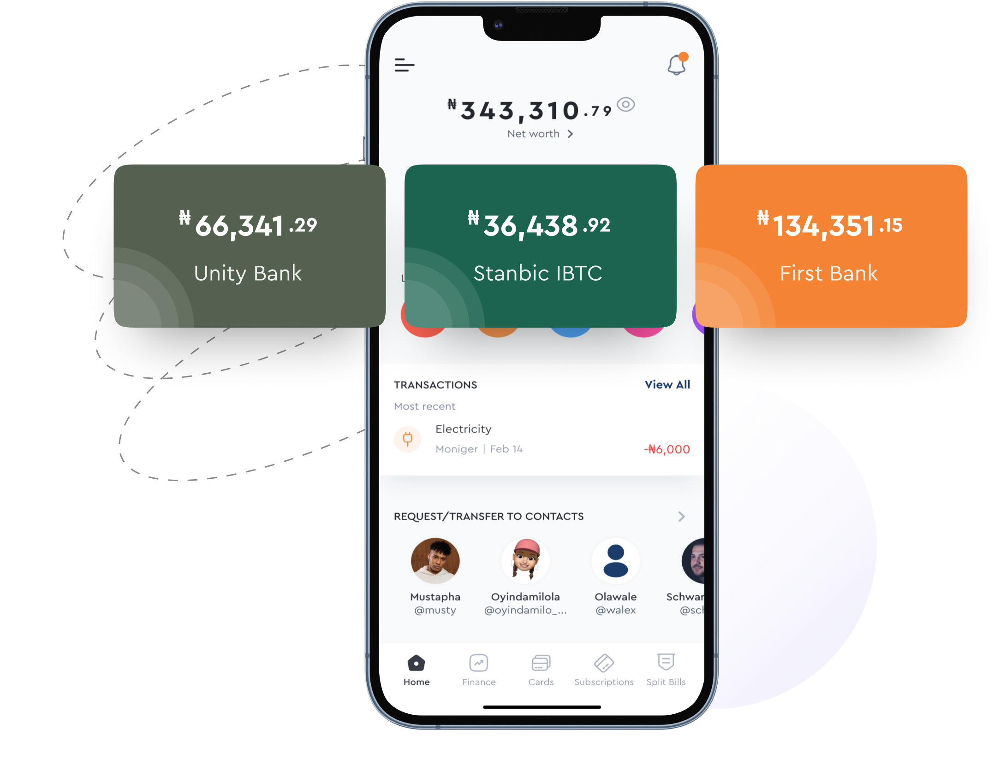
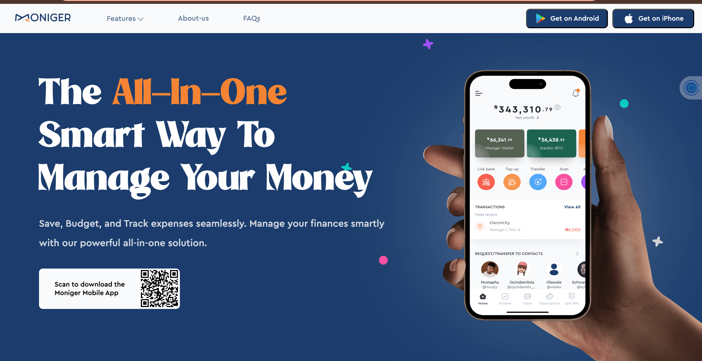
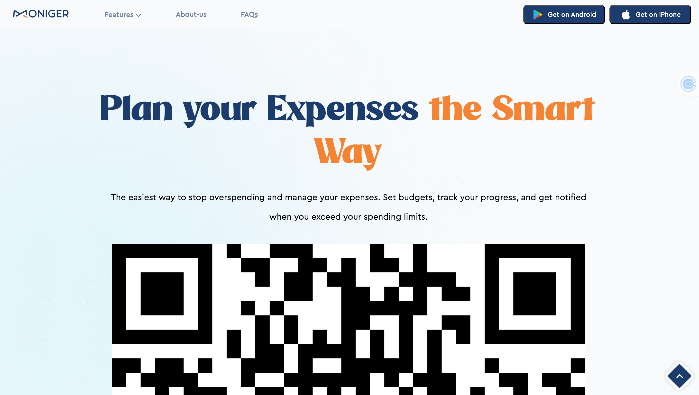
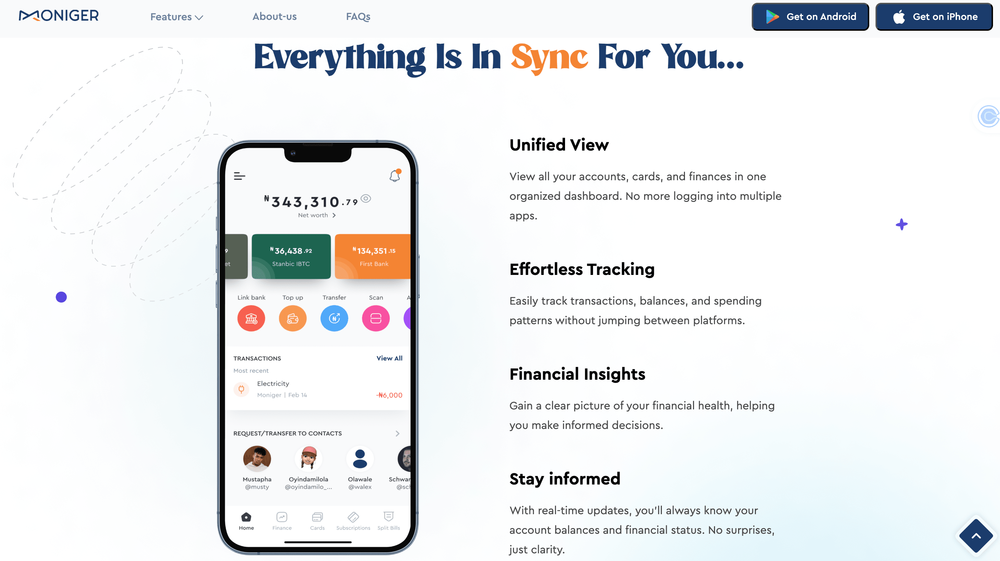
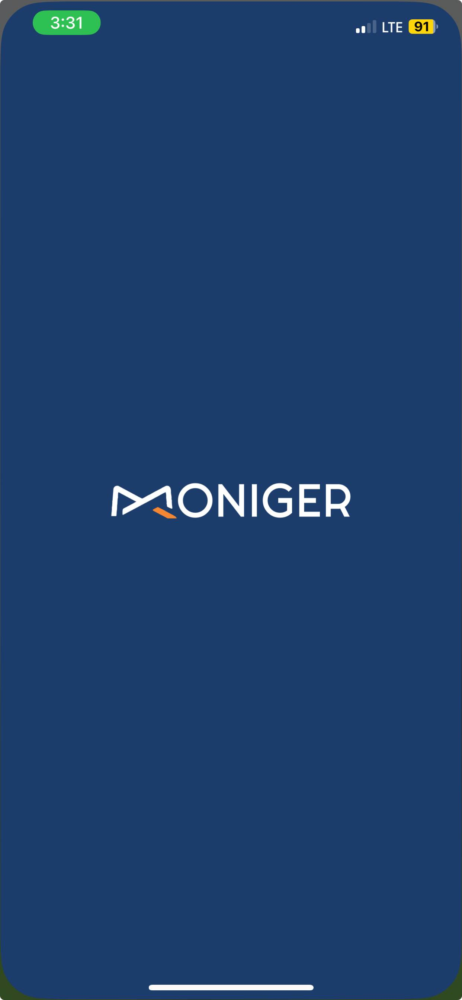
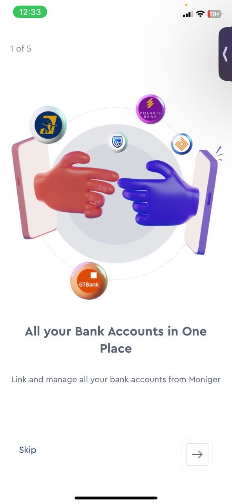

Elevating User Experience: Moniger Mobile App and Website

Moniger simplifies financial management, letting users link multiple bank accounts, track budgets, and manage subscriptions from a single view. Most people arrived at the product already overwhelmed, manually tracking accounts across different banks with no consolidated picture of their money.
The product solved a real problem. The risk was explaining it in language dense enough to sound credible and simple enough to earn trust before anyone linked an account.
Getting there took more than a copy pass. Every touchpoint needed to earn a level of trust that financial products cannot fake, so the process started with listening rather than drafting.
Interviews and surveys with people already managing multiple bank accounts surfaced the exact words they used for their pain points, words that became the product's actual vocabulary instead of internal financial terminology. That research shaped three decisions that carried through every release since.
Anchor Copy in Real Language
The words people used to describe their own pain points, not internal terminology, became the product's vocabulary.
Let Content Lead the Design
Copy shaped the design team's wireframes and prototypes, not the reverse. Every screen was built around how the information needed to be understood first.
Govern the Voice, Not Just the Words
A content style guide and A/B-tested copy gave the team a system for tone, voice, and messaging that held up as new features shipped.
None of those decisions worked in isolation. A style guide without content-first wireframes would have governed the wrong words. Research without a system to protect it would have faded by the second feature release. Together, they meant the product could grow without the voice drifting.
Every functional website depends on one thing in its hero sections: a simplified voice. Across Moniger's web pages, home, virtual cards, budgeting, finance manager, subscriptions, and account aggregation, the goal was clear, consistent microcopy pulled from research, not guesswork.
Before that copy touched a single wireframe, a closed card-sorting exercise defined the content hierarchy, so the information architecture reflected how users actually grouped these features, not how the org chart did.

Hero section, home page

Hero section, budgeting page

The mobile app carried real complexity: accounts, budgets, and subscriptions, all needing one consistent flow. A splash screen and the Nickel Tour approach to onboarding, a multi-step progress indicator, always showed users exactly where they stood.
Research surfaced two distinct segments: people juggling multiple bank accounts, and people who wanted to track spending on the go without opening a spreadsheet. Every piece of copy was tested against both before it shipped.

Splash screen

Onboarding, Nickel Tour approach
The engagement went beyond shipping copy for a single release. It meant building the infrastructure that let Moniger's team keep creating strong content without me in the room.
- Help center documentation, mapped to each stage of the user journey, from account setup and bank linking to budgeting and subscription management, so users could resolve questions the moment they hit them.
- Blog content supporting the product's positioning and helping users understand features beyond the app itself.
- A content system and style guide governing tone, voice, and messaging across mobile, web, and support content, so the product stayed consistent as new features shipped.
That system held. Two years in, the numbers leading this page, a 25% increase in conversions and an 8% reduction in onboarding drop-off, came from the same discipline: research first, content-first wireframes, and a style guide that kept the voice consistent long after the first release shipped.
- Self-serve help center content mapped to the full user journey
- Plain-language copy replacing internal financial jargon
Complexity in a product does not have to become complexity in the copy. On Moniger, the words carried the weight so the interface never had to.
Building a product with a similarly complex story to tell?
I'd love to hear about your team and where content strategy could help.
Let's work together →